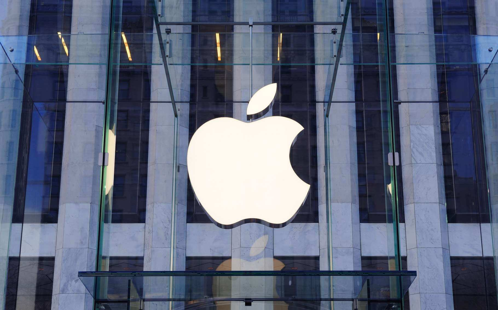
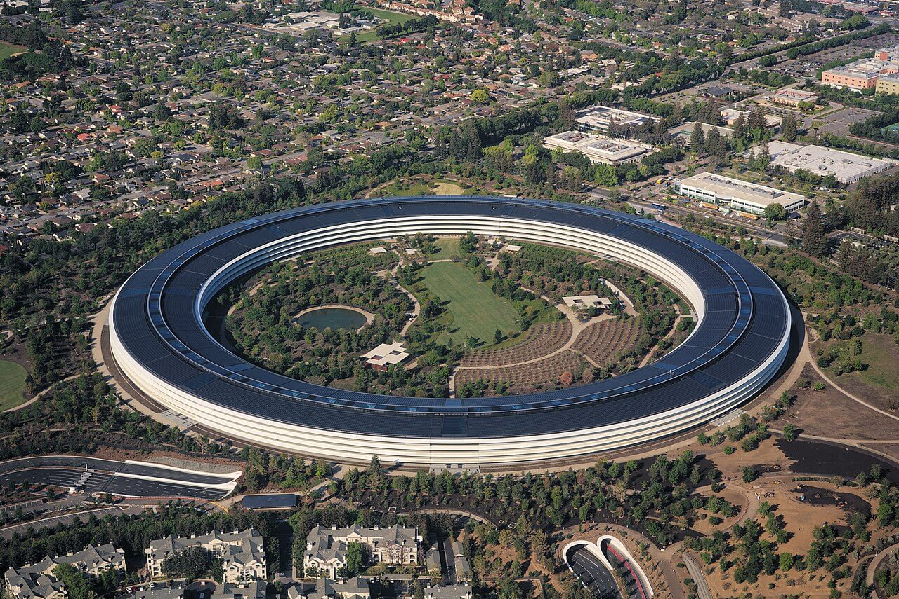
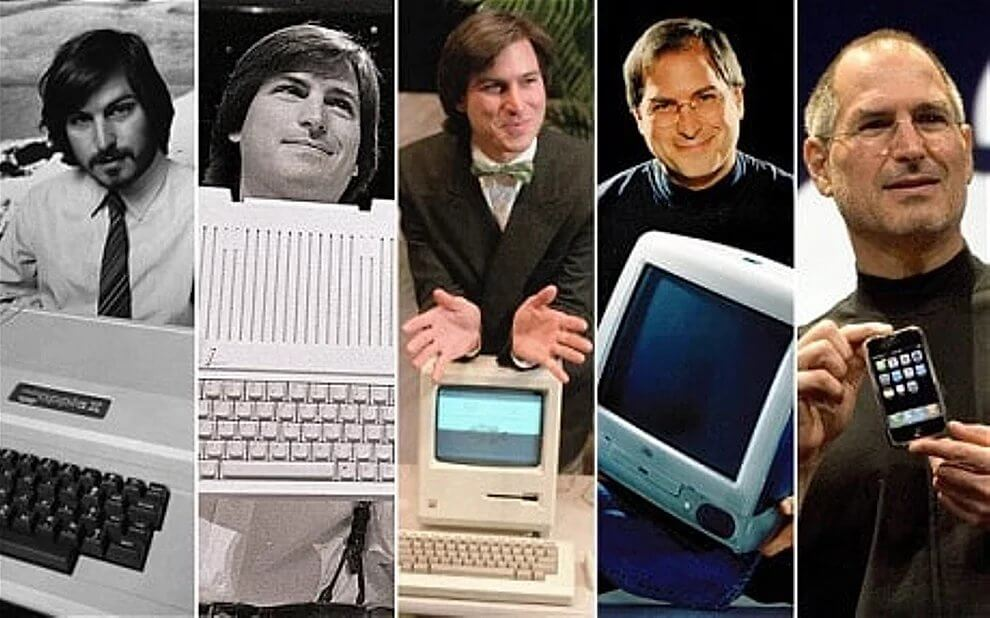
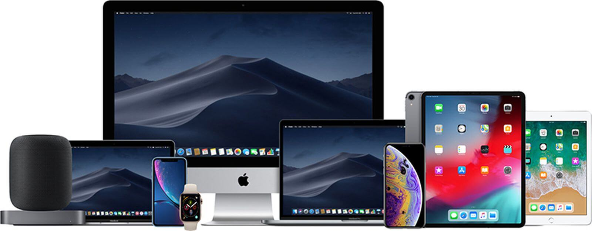
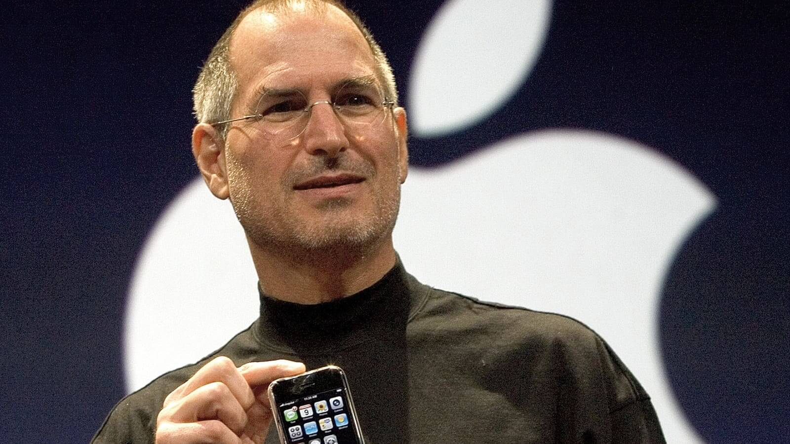
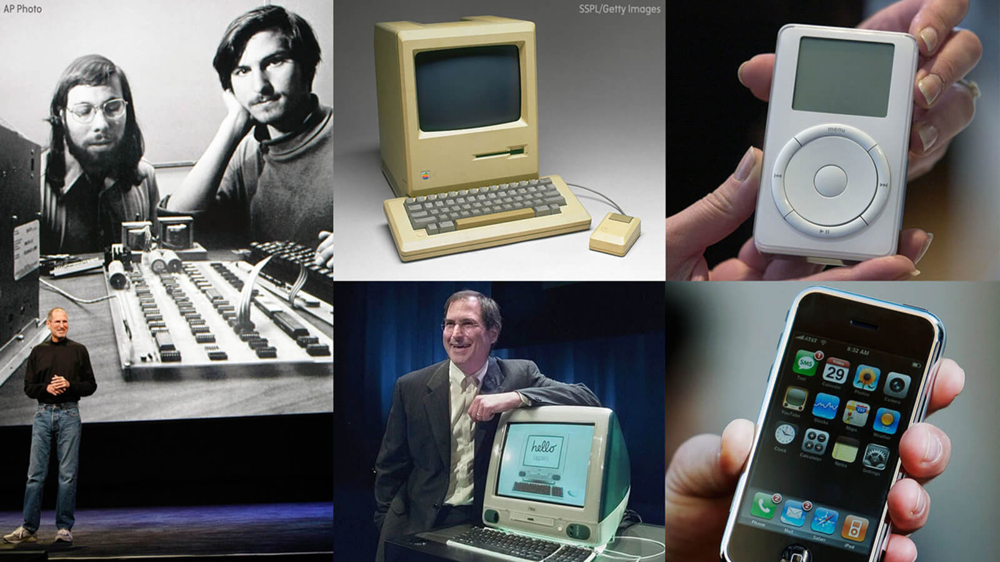
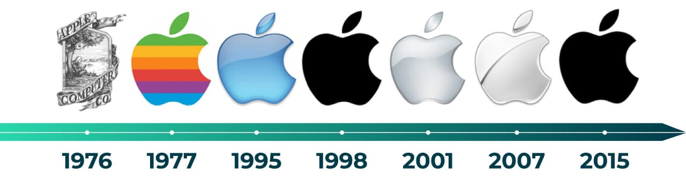

Продукция компании Apple сегодня успешно продается по всему миру. Как показывает практика, каждое новое творение знаменитой «яблочной» корпорации, еще до официального выхода в продажу, становится предметом культа и почитания. Сложно представить, но История самой дорогой компании в мире начиналась в гараже у легендарного Стива Джобса. За сорок пять лет своего существования она не представила миру ни одного открытия, несмотря на это, сумев, кардинально изменить ход истории всей сферы IT-технологий.
Apple (дословный перевод с англ. яз. — «яблоко») — крупнейшая американская корпорация, специализирующаяся на разработке и производстве персональных компьютеров, планшетов, смартфонов, ноутбуков, программного обеспечения, с оборотом $275 млрд (2020). Торговая марка входит в число пионеров в сфере ПК и многозадачных ОС с графическим интерфейсом.

Штаб - квартира Apple находится в калифорнийском городе Купертино. В своих гаджетах бренд широко использует инновационные технологии и уникальный, узнаваемый дизайн. Компания стала первой корпорацией США, чья капитализация составила 1,044 триллиона американских долларов (Сентябрь 2018 года).
История Apple полна взлетов и падений, громких релизов и откровенных провалов, миллиардных заработков и не менее внушительных убытков. Ничего удивительного в этом нет, ведь у истоков компании стоит невероятный человек, который во времена своей юности прочно «подсел» на зависимость под названием «цифровые Инновации» и не успокоился до тех пор, пока не заразил этим вирусом весь цивилизованный мир.
На сегодняшний день, безусловно, самым продаваемым продуктом являются iPhone и iPad. Первый гаджет был представлен миру еще в 2007 году, с тех пор производитель продал более миллиарда смартфонов, причем половина из них была реализована в последние пять лет. Во многом это стало возможным благодаря тому, что американский бренд активно создает и использует инновации в собственных устройствах.

Так, например, активно используется защита персональных данных пользователи с помощью биометрии. Функция Touch ID сумела произвести настоящий фурор среди покупателей. Не меньшего внимания заслуживают беспроводные технологии собственная экосистема фирмы. Еще в 2011 году корпорация представила собственное облачное хранилище iCloud, без которого не обходится сегодня ни один владелец Айфона, Айпада или Мака. А после выхода iPhone 7 без привычного всем аудио разъема в мире началась эра беспроводных наушников AirPods.
Стив Джобс вошел в историю, как гениальный маркетолог, который сумел превратить свой продукт в статусный атрибут избранных и состоятельных эстетов. Лаконичный фирменный стиль стал визитной карточкой продуктов компании. Под его руководством компания сумела произвести в цифровой вселенной самую настоящую революцию, превратив весьма «сухой» и непритязательный в плане красоты и дизайнерских изысков техно-мир в настоящее произведение цифрового искусства. Всего за несколько десятилетий Эппл представил множество супер инновационных, уникальный и техно-творческих продуктов, многие из которых успешно продаются в премиальных сегментах рынка.

Ассортиментная линейка насчитывает сотни наименований аппаратного и программного обеспечения, сервисом и услуг. Одни продукты так и не смогли получить широкую известность, другие пользуются спросом лишь у ограниченного круга покупателей, тогда как третьи на слуху у миллионов пользователей современных гаджетов по всему земному шару.
В список продуктов Apple также входят сканеры, принтеры, телевизионные приставки, компьютерные мыши, фотоаппараты, клавиатуры, пульты ДУ и многие другие устройства.
В одном из своих интервью Стив Джобс заявил, что в самом ДНК Apple заложен принцип о том, что одних технологий для успешных продаж недостаточно. Инновации должны быть совмещены с творчеством и искусством, только в этом случае современные гаджеты смогут заставить «петь и ликовать» сердца покупателей.

В основе маркетинговой политики лежит несколько простейших правил, главной целью которых является создание идеального во всех отношениях продукта, обладающего привлекательным дизайном и интуитивным управлением. Корпорация с маниакальной дотошностью относится даже к незначительным на первый взгляд деталям. Интересным примером может стать проработка стандартных приложений. Так, например, на иконке TextEdit набрано полное содержание рекламного ролика, рассмотреть которое можно только при многократном увеличении. А музыку для iMovie записывал Лондонский симфонический оркестр.
"Безусловно, пользователи «яблочных» смартфонов, планшетов и компьютеров,
слегка переплачивают, но согласитесь, они знают, за что отдают свои деньги!
За непередаваемое ощущение в кончиках пальцев, когда прикасаешься к
тачпаду Айфона, за легкое напряжение мышц при открывании крышки
MacBook, в конце концов, за сопричастность к легендарному бренду
и удивительное ощущение обладания статусного устройства, позволить себе
который может далеко не каждый."
Став однажды клиентом бренда, практически невозможно перестать пользоваться ее услугами и продуктами. Это во многом связано с тем, что в 2010 году Стив Джобс поставил перед своими подчиненными амбициозную задачу по созданию уникальной экосистемы, которая объединит все гаджеты и сервисы Apple.

В основе стратегии продаж лежит идея о противопоставления себя остальным торговым маркам. Бренд с одной стороны постоянно показывает миру, насколько он отличается от конкурентов, с другой - за счет принципа «против всех» он получает уникальную возможность «привязать» покупателя.
И пока европейские, американские, китайские и японские компании выпускают смартфоны и планшеты на Android, Apple работает над обновлением и улучшением собственной платформы iOS. К устройствам корпорации не подходят зарядные устройства со стандартными разъемами, они функционируют в комплекте с оригинальными наушниками, для них выпускаются отдельные Приложения, скачать которые можно только в магазине App Store.
Еще одним примером такой «привязки» является iCloud, который синхронизируется только с устройствами Apple. Облачный сервис удачно объединил в себе такие компоненты, как: контакты, электронная почта, фотографии, видео, заметки, календарь и многое другое. И теперь, если пользователь решится на покупку нового телефона, то ему проще всего будет купить iPhone, в противном случае придется не только привыкать к интерфейсу Android, но и попрощаться с информацией, хранящейся в облаке.
| Название продукта | Цена (примерно) |
| iPhone 15 Pro | 99 990 ₽ |
| iPhone 15 | 79 990 ₽ |
| MacBook Air 13 (M2) | 119 990 ₽ |
| MacBook Pro 14 (M3) | 199 990 ₽ |
| iPad Pro 12.9 (M2) | 109 990 ₽ |
| iPad Air (M1) | 69 990 ₽ |
| Apple Watch Series 9 | 39 990 ₽ |
| AirPods Pro (2nd gen) | 24 990 ₽ |
| iMac 24 (M1) | 129 990 ₽ |
| Apple TV 4K | 14 990 ₽ |
Более подробно с ценами на все девайсы от Apple можно ознакомиться, перейдя на официальный сайт Apple Store
Первый логотип компании, был создан в 1976 году, Рональдом Уэйном - третьим акционером тогда еще никому неизвестной фирмы. Эмблема представляла собой полноценную картину с изображением Исаака Ньютона, на которого с дерева падает яблоко.

Однако, несмотря на оригинальность и привлекательность миниатюры было очевидно, что для использования в коммерческих целях она совершенно не подходит. Поэтому, Стив Джобс решает обратиться за помощью в создании узнаваемого логотипа к профессиональному дизайнеру Робу Янову.
К будущему лого предъявлялось всего несколько требований:
Спустя неделю, дизайнер показал результат - надкусанное с одной стороны цветное яблоко. Вот только, радужный фрукт мгновенно породил массу домыслов. Кто-то считал, что таким нехитрым образом корпорация в открытую заявляет о поддержке LGBT-сообщества, другие были уверены, что изображение цветного яблока имеет скрытый смысл и является отсылкой к научным исследованиям знаменитого математика и криптографа Алана Тьюринга. Из-за обвинений в гомосексуализме он был вынужден отказаться от науки, следствие чего покончил жизнь самоубийством, надкусив яблоко начиненное ядом.
На самом деле все было намного проще. Как утверждал сам дизайнер, логотип и его расцветка напрямую связаны со сферой деятельности корпорации - производством ПК с цветными мониторами. На протяжении последующих лет эмблема Эппл неоднократно изменялась, при этом общая идея оставалась неизменной.
Одной из главных причин успеха Apple стал тот факт, что ее основателю - гениальному маркетологу и талантливому дизайнеру, Стиву Джобсу, удалось превратить продукцию компании в признанный символ процветания, успеха и богатства. Он считал, что презентуя даже самый амбициозный и новаторский проект нужно использовать меньше слов, делая акцент на эмоциональной составляющей контакта с аудиторией, будь это влиятельные инвесторы или простые ценители продуктов бренда. Отсюда его знаменитое хождение по сцене в простой черной водолазке и джинсах, и тишина, которая сменялась шквалом аплодисментов после очередной истории из жизни. В развитии дела своей жизни он пошел по верному и беспроигрышному пути: любить то чем занимаешься.